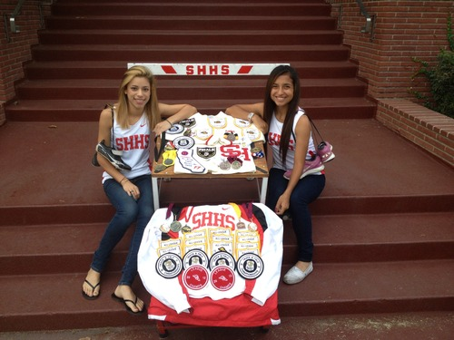

Sacred Heart High School Runners and 2014 Graduates to Compete in College
By Frank Vargas (SHHS Coach)
Ashley Salazar and Jackie Vargas are successful runners from the Catholic all-girls college prep school in Lincoln Heights.
They, like many Sacred Heart runners before them, will also compete in college next year. Ashley Flores runs at Whittier College. Twins Sabrina and Regina Lopez ran at Oregon State. Lori Lopez ran at Cal Poly SLO. All were CIF and State cross country (CC) or track champions. Salazar was on the first CC team to compete at State, finishing 14th. Vargas was 14th in the 300m hurdles. Both have three league championships.
Times were difficult for Salazar after her father passed away last year, and her teammates became extended family. She dedicated the season to him. Everyone wore T-Shirts emblazoned with angel wings and “Sab Lives” to show support. Salazar said after the State Championships, “My father was with us the whole season. I felt him through the finish line at Finals.” when the team qualified to State.
Vargas has pain every time she eats since 7th grade. Children’s Hospital diagnosed her with a slow stomach. It expands like a balloon putting pressure on internal organs and bulges out. Vargas calls it, “The “Monster” because it growls.” Vargas excels at running fast – CIF all four years. She helped set the 4x400m relay school record, then long jump, and so on until the 6th record in her final race. She refuses to allow digestive pains and asthma stop her.
Recruited to Colorado State University, Pueblo, Salazar is ready, saying, “I have faith in myself, and an angel looking over my shoulder.” The Track coach from St. Catherine University, St. Paul, Minnesota convinced Vargas to join, “I’m already thinking of which records I will try to break.” These ladies can deal with adversity, and will have family and friends from Los Angeles cheering for them.